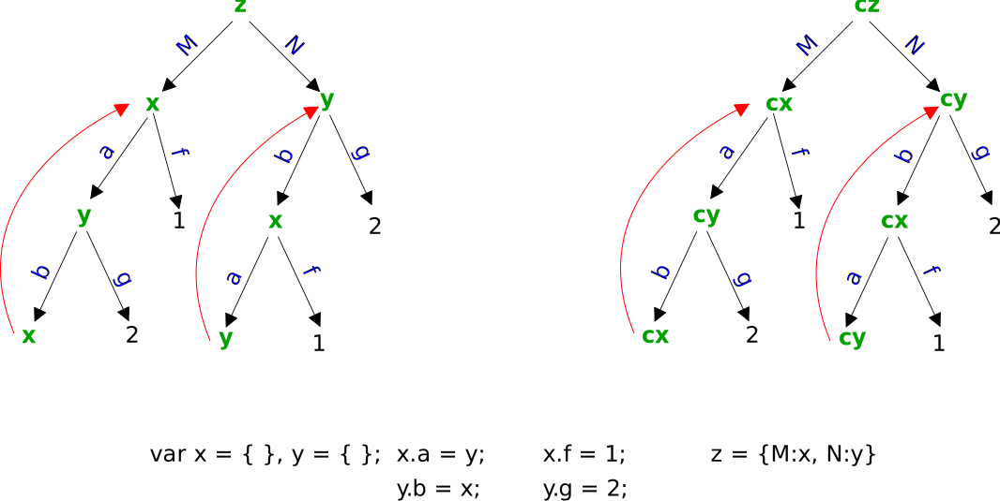

In deep copyying, handling circlular refences is the easy part.
Meouzer
In deep copyying, handling circlular refences is the easy part. Meouzer
Meouzer is biting his tail, which somehow just seems relevant.
Full code at Deep-Copy-Literals.js, which has no dependencies.
In an object tree, if two nodes are equal they are circular references if one is an ancestor of the other, but otherwise they are duplicate references. Circular references tend to cause infinite recursion in naive algorithms, while duplicate references do not.
Our goal is to show how to break circular references, so we take it easy and stick to copying literals.
The following is probably the simplest way to process a tree of nodes in preorder, with upper most node topNode.
However, it adequate for only the most basic tasks. One problem is that once a node is on the stack, it's ancestors have already been popped off. You can in fact transverse in preorder while keeping ancestors on the stack and doing so makes dealing with circular references a one liner, with some supporting code of course. Also the stack consists of nodes when it's possible that it should contain additional information for processing needs. So a member of the stack should roughly resemble something like {node:x, otherInfo:info, ...}.
In deep copying, stack members may be like {node:x, children:x.children, index:3} where index points to the child node currently being processed. When index passes its max = x.children.length - 1, all children of the node x have been processed, and x can then be popped off the stack. So a child while processing will always have its parent on the stack.
This tree can be "represented" in literal notation as var tree = {a:{b:{e:{},f:{}},c:{g:{}, h:{}},d:{i:{}, k:{}}}}. Let's process the "nodes" of this tree in a preorder transversal.
The above is the preorder transversal framework that can accomplish major things: stringification of objects, deep copying, and in part helps with breaking circular references in deep copying. Of course members of the stack may become more complicated with other information for the need.
We will next show how to deep copy literal objects with circular references with help from a cheater stack.
The object to be copied is called a source and its deep copy is called the target. Each node source.X, where X is a dotted chain of attributes, is also called a source and its target is target.X, the corresponding node in the target tree. When the deep copy algorithm is complete, each target will be a deep copy of its source.
The code below produces the tree on the left. We want to do a deep copy. Notice that x and y refer to each other through their attributes a and b. In the left tree, the two circular references are shown. We want to make sure the deep copy contains the same circular references, and that once a circular reference is obtained copying should stop for the node in question.
The following table depicts a stack algorithm in preorder transversal.
| Stack | |||
|---|---|---|---|
| depth | Source | Target | Keys in Preorder |
| 1 | z | cz = { } | |
| 2 | z.M = x | cz.M = { } | M |
| 3 | z.M.a = y | cz.M.a = { } | a |
| 4 | z.M.a.b = z.M | cz.M.a.b = cz.M | b |
| 4 | z.M.a.g = 2 | cz.M.a.g = 2 | g |
| 3 | z.M.f = 1 | cz.M.f = 1 | f |
| Intermission. Popcorn is ready! | |||
| 2 | z.N = y | cz.N = { } | N |
| 3 | z.N.b = x | cz.N.b = { } | b |
| 4 | z.N.b.a = z.N | cz.N.b.a = cz.N | a |
| 4 | z.N.b.f = 1 | cz.N.b.f = 1 | f |
| 3 | z.N.g = 2 | cz.N.g = 2 | g |
OK! The target is the deep copy of the source, but not originally. The target gets filled in as the algorithm progresses.
Original thoughts were that there's no way we are going to search through the stack in preorder transversal code to find circular references, so we are going to let the stack itself do the work. (1) The stack will keep a fast record, say a WeakSet of all sources on the stack and so infinite recursion is avoided since a source will not be pushed onto the stack if it already is on the stack.
(2) To check and close circular references the stack will maintain a WeakMap. Every time a source, and target are pushed onto the stack, the source will be weakly mapped to the target. Once we reach a particular source source.X that is already on the stack, we look up its target T in the WeakMap. The value of target.X in the target tree is set to T to close the circular reference and maintain consistency.
The WeakSet is redundant since the WeakMap is also a fast record of sources (in addition to their targets)
For example, when we see z.M.a.b = x is already a source on the stack, we lookup its target which is cx. We then know to set cz.M.a.b to that target cx to duplicate the circular reference.
You should now be able to make headway on the grand finale: The deep copy algorithm of literals that can deal with circular references.
The reader can create more extensive examples.
In addition to circular references, which cause infinite recursion unless you specifically code for that possibility, there may be duplicate references that themselves should really be taken care of. To do that in the CheaterStack pop code delete the line wm.delete(x.source);. You can even do better. In deepCopyLiteral code, start with [] as the stack, i.e., no cheater stack, then deepCopyLiteral will itself use a weak map to take care of circular references and duplicate references.
However, cheater stacks are still important and you got to see a simple example of one.